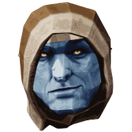

SkinwalkerSearch 594,340 Destiny 2 endgame builds
Builds
No matches. Loosen a filter or lower Min. players.
Highlights
Builds
How it works
- Builds
- Exact builds from qualified clears, as equipped. Nothing is averaged. Searchlight recorded builds only for the players it monitored, about 2% of clears; every clear still sets its player’s usual level.
- Ranked Builds
- Build types: builds that share class, subclass, exotics, super and aspects. A type ranks by effect: how much better players do with it than on their own other runs, so strong players can’t carry it. Raw is how its runs went; skill is how good its players are. Everyone here was already elite, so most effects sit near zero.
- Clears
- Scored on kills, speed and deaths against typical clears of the same activity (Searchlight’s evaluator). Solo clears of fireteam content earn the activity’s solo premium (×1.2–3.4; none for raids). Late joiners are scored per minute played. Only clears that met Searchlight’s gates count.
- Top build and variants
- The top build is the best exact build of the best loadout (same kit and weapons) players came back to. Variants differ by a perk, mod or artifact perk.
- Highlights
- Up to three builds per subclass and six Prismatic for the neutral game, one per subclass per activity: as strong and as different as the data allows. Distinct is how much of a pick’s playstyle the picks above don’t share. The neutral game counts only what a build does across activities. Incomplete captures are left out.
- Min. players
- Different players who ran the build type in that activity.
- Raw Search
- All 594,340 recorded builds. 144,709 were used in scored clears and are ranked; the rest only in unfinished runs or runs that missed Searchlight’s gates.
Player skill explains about 40% of a clear; the build about 5 points more. Support builds are undervalued (their value shows in teammates’ kills). Thin evidence is pulled toward average.